Como un estimulo puede terminar cambiando tus hormonas
Clase integrada U4 para 4. de Secundaria. Aqui el sistema nervioso se presenta como respuesta rapida por eventos; el sistema endocrino, como regulacion lenta y sostenida; y el hipotalamo-hipofisis, como el puente que traduce una senal nerviosa en una respuesta hormonal.
- Ruta central de la clase: estimulo -> receptor -> integracion -> senal -> efector -> respuesta -> regulacion.
- Comparacion base: el sistema nervioso comunica rapido y localizado; el endocrino regula mas lento y de forma mas distribuida.
- Meta final: explicar casos reales usando ambos sistemas como una sola red de control corporal.
Mapa general del sistema nervioso
Primero ubicamos el sistema completo para que el estudiante no vea neuronas sueltas, sino una red corporal organizada.
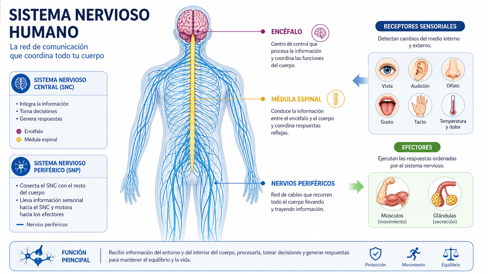
- Presentar encéfalo, medula espinal, nervios perifericos, receptores y efectores.
- Explicar que el sistema nervioso detecta cambios del medio externo e interno y coordina respuestas casi inmediatas.
- Conectar con ejemplos: dolor, equilibrio, reflejos, vision, reaccion al peligro.
La neurona como unidad funcional
Antes de hablar del impulso, el estudiante debe entender la arquitectura celular que hace posible la rapidez del sistema nervioso.
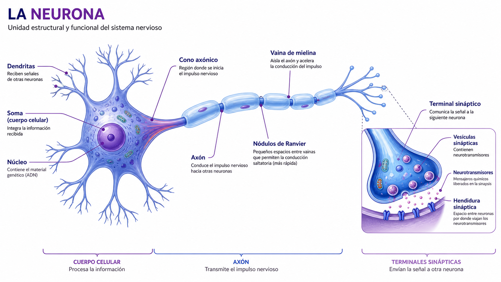
- Nombrar partes: dendritas, soma, nucleo, cono axonico, axon, mielina, nodulos de Ranvier y terminal sinaptico.
- Explicar el sentido general: recibir, integrar, conducir y transmitir informacion.
- Aclaracion rigurosa: las neuronas del sistema nervioso central tienen regeneracion muy limitada, no nula en sentido absoluto.
Como viaja el impulso nervioso
Aqui aparece la idea de respuesta por eventos: una vez superado el umbral, la senal se propaga rapidamente con direccion definida.
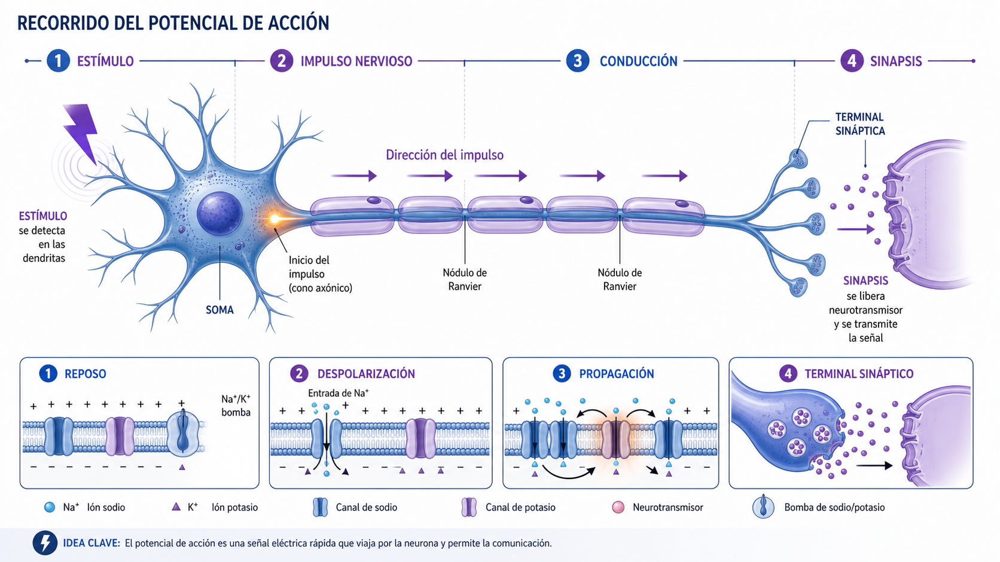
- Diferenciar reposo, despolarizacion, propagacion y llegada al terminal.
- Relacionar mielina y nodulos con una conduccion mas eficiente.
- Comparar esta senal con una interrupcion rapida del cuerpo ante un cambio del entorno.
Tipos de neuronas y flujo de informacion
La clase debe ver que no todas las neuronas hacen lo mismo: unas detectan, otras integran y otras ejecutan.
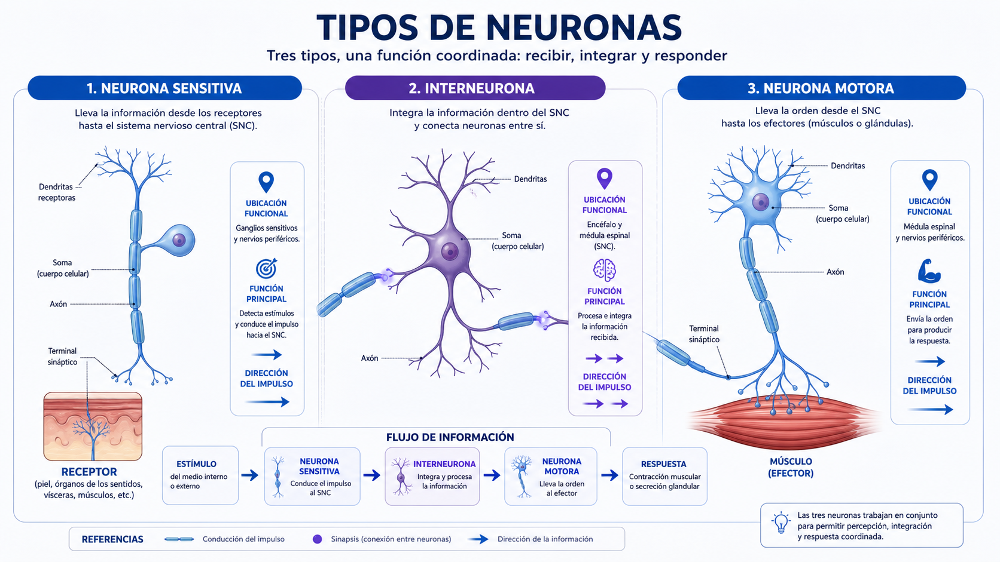
- Neurona sensitiva: lleva informacion desde receptores al SNC.
- Interneurona: integra, compara y organiza la respuesta.
- Neurona motora: envia la orden hacia musculos o glandulas efectoras.
Arco reflejo: la ruta corta de supervivencia
Esta es la mejor imagen para demostrar que no toda respuesta necesita pasar primero por una decision consciente.
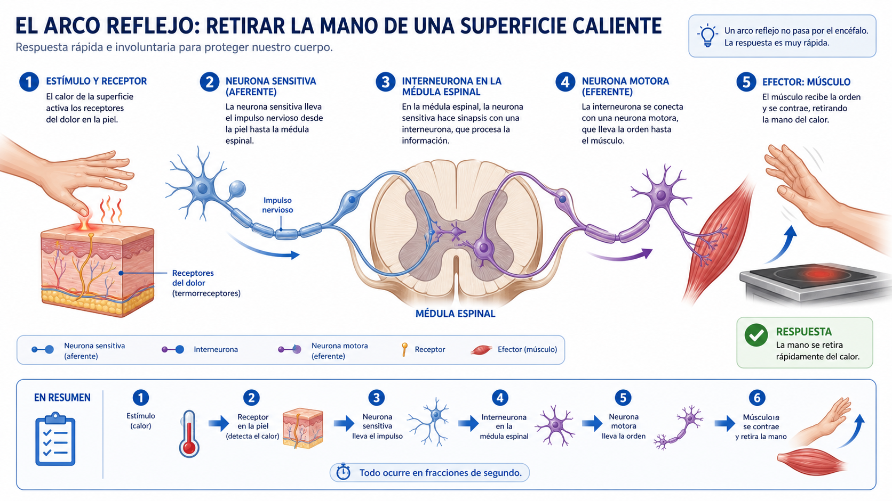
- Secuencia: receptor en piel -> neurona sensitiva -> medula -> interneurona -> neurona motora -> musculo.
- Explicar por que el reflejo es mas rapido que una respuesta plenamente consciente.
- Usar el ejemplo de tocar una superficie caliente para anclar la explicacion.
SNC y SNP: centro de integracion y red de conexion
Con esta comparacion queda mas claro donde se procesa la informacion y por donde circulan las ordenes.
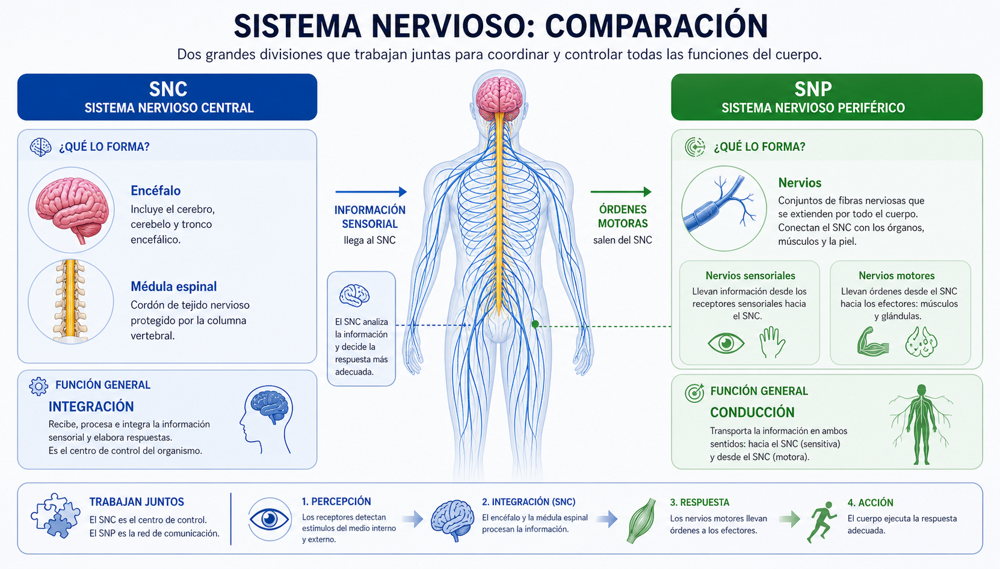
- SNC: encéfalo y medula; interpreta, integra y decide.
- SNP: nervios que conectan el cuerpo con el centro integrador.
- Insistir en que sentir, pensar y responder forman una sola cadena funcional.
Sinapsis quimica: donde una neurona le habla a otra
Aqui el estudiante entiende que la rapidez nerviosa tambien depende de mensajeros quimicos, pero liberados en un punto muy preciso.
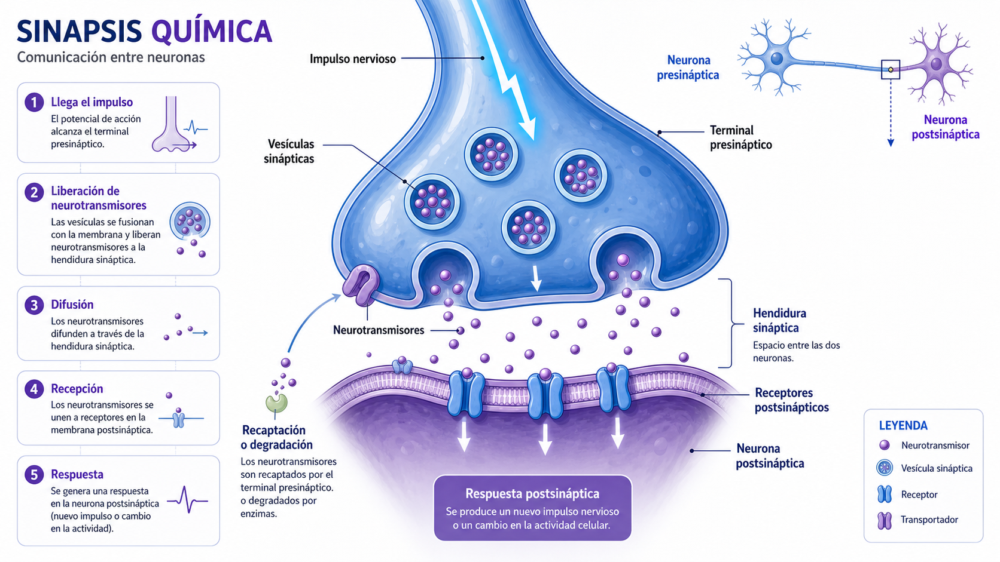
- Mostrar terminal presinaptico, vesiculas, neurotransmisores, hendidura y receptores postsinapticos.
- Explicar que el impulso electrico dentro de la neurona se convierte en senal quimica entre neuronas.
- Comparar esta precision local con la difusion mucho mas amplia de las hormonas en sangre.
Plasticidad y poda sinaptica
Esta imagen amplia la clase: el sistema nervioso no solo responde, tambien cambia, selecciona y reorganiza conexiones.
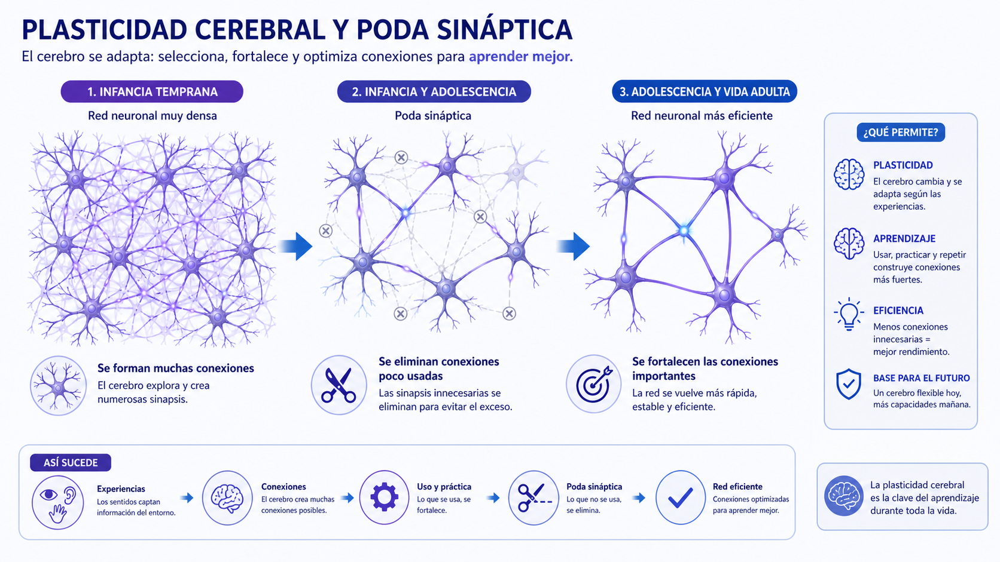
- Presentar la idea de que en la infancia existen muchisimas conexiones que luego se refinan.
- Relacionar poda sinaptica con aprendizaje, eficiencia y adaptacion.
- Evitar absolutismos: el cerebro cambia con la experiencia durante toda la vida, aunque no del mismo modo en todas las etapas.
Mapa general del sistema endocrino
Ahora pasamos al sistema lento y sostenido: una red de glandulas que regula el medio interno mediante hormonas.
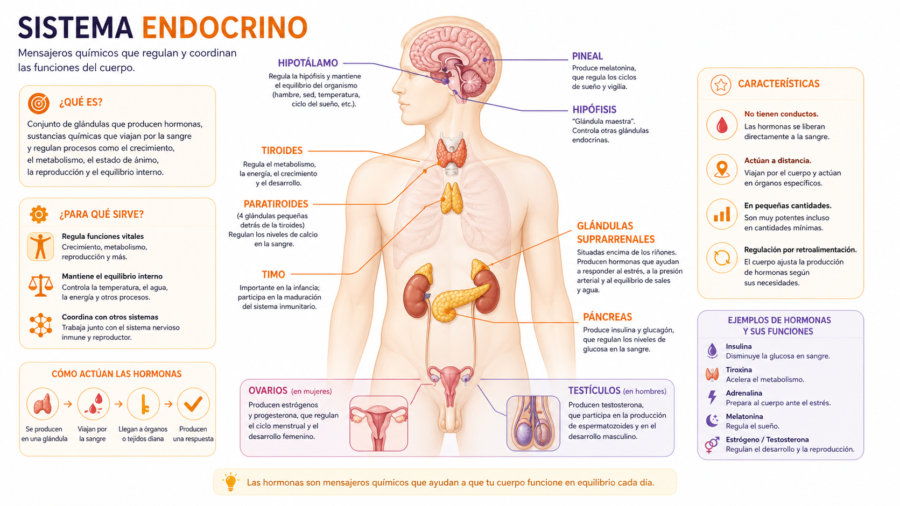
- Ubicar hipotalamo, hipofisis, pineal, tiroides, paratiroides, timo, suprarrenales, pancreas y gonadas.
- Enfatizar que no todas las respuestas del cuerpo son inmediatas: muchas requieren regulacion mantenida.
- Conectar con crecimiento, metabolismo, pubertad, estres y control de glucosa.
Glandulas y hormonas principales
Esta lamina sirve para sintetizar quien produce que y para que, sin perder la vision de sistema.
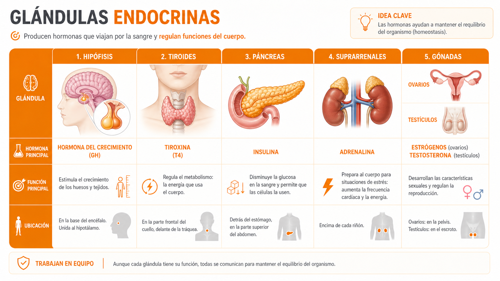
- Repasar hormona principal y funcion dominante de hipofisis, tiroides, pancreas, suprarrenales y gonadas.
- Aclarar que la hormona no actua por si sola: necesita organos diana con receptores adecuados.
- Preparar el salto al concepto de homeostasis.
Hormona, sangre y organo diana
Aqui se ve por que el sistema endocrino es mas lento pero mas amplio: la senal viaja por sangre hasta celulas con receptores especificos.
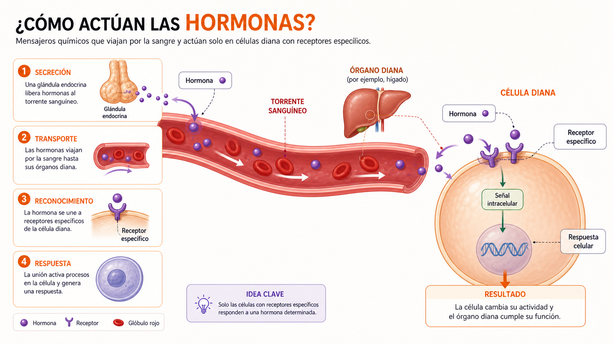
- Explicar hormona como mensajero quimico y organo diana como receptor especifico.
- Comparar con la sinapsis: en el endocrino la distribucion es mas extensa y la accion mas sostenida.
- Usar ejemplos: insulina, tiroxina, cortisol, hormonas sexuales.
Homeostasis como bucle de control
Esta es la imagen que mejor traduce la idea de algoritmo biologico: el cuerpo detecta desviaciones y corrige el equilibrio.
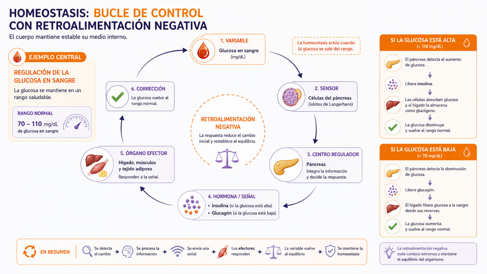
- Presentar variable, sensor, centro regulador, senal hormonal, organo efector y correccion.
- Tomar la glucosa como ejemplo principal de retroalimentacion negativa.
- Explicar que la homeostasis no significa inmovilidad, sino regulacion dinamica del equilibrio.
Hipotalamo e hipofisis: el centro del puente
Este es el nucleo conceptual de toda la clase: una senal nerviosa puede transformarse en respuesta hormonal.
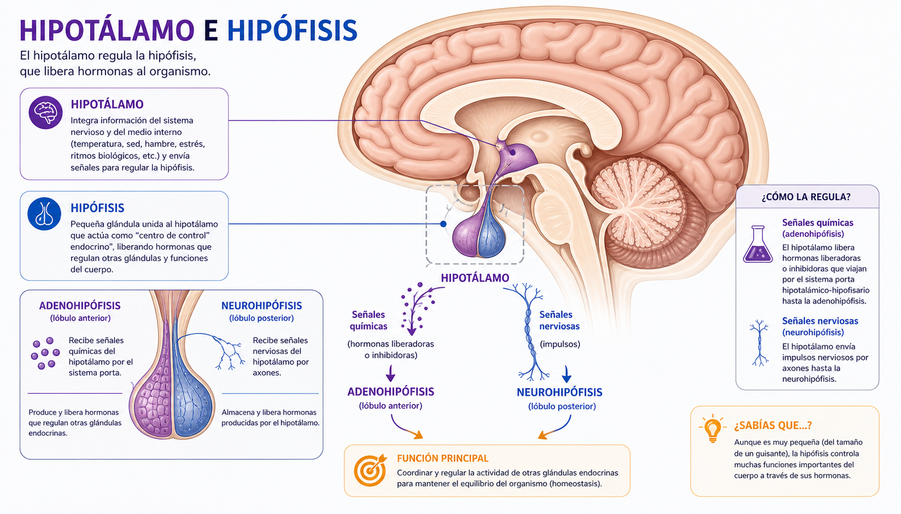
- Hipotalamo: integra informacion del SNC y del medio interno; detecta necesidades y ordena respuestas regulatorias.
- Hipofisis: ejecuta o distribuye la orden hormonal hacia otras glandulas.
- Diferenciar adenohipofisis y neurohipofisis como dos regiones con funciones distintas.
Eje hipotalamo - hipofisis - glandula
Aqui ya no se habla de dos sistemas separados, sino de una cadena integrada que conecta cerebro, hormonas y organos.
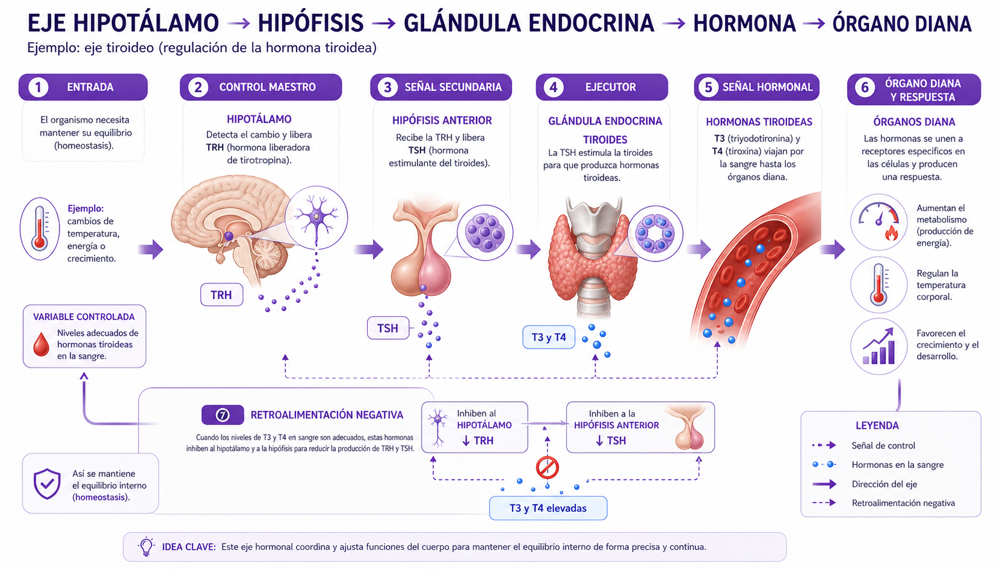
- Secuencia general: estimulo o desequilibrio -> hipotalamo -> hipofisis -> glandula -> hormona -> organo diana -> respuesta.
- Usar el eje tiroideo como ejemplo de control maestro y retroalimentacion.
- Relacionar esta estructura con la idea de un algoritmo biologico por modulos.
Caso integrado: estres agudo y respuesta sostenida
Esta es la mejor comparacion para distinguir claramente rapidez nerviosa y persistencia endocrina en un mismo evento.
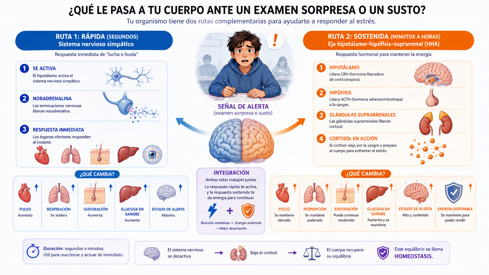
- Ruta rapida: sistema nervioso simpatico cambia pulso, respiracion, sudoracion y alerta.
- Ruta sostenida: eje hipotalamo-hipofisis-suprarrenal eleva cortisol y reorganiza la energia disponible.
- Conclusión didactica: un mismo estimulo puede activar una respuesta inmediata y otra mantenida.
Cuando la regulacion falla: enfermedades endocrinas
La unidad se vuelve clinica aqui: la enfermedad aparece cuando los mecanismos de control se desajustan o se mantienen fuera de rango.
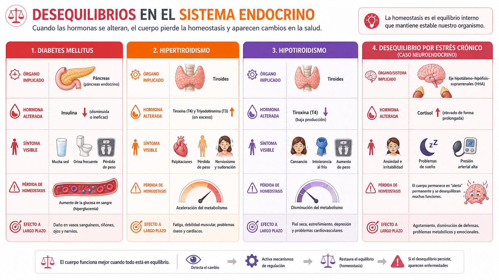
- Trabajar diabetes mellitus como caso principal de perdida de homeostasis de la glucosa.
- Contrastar hipertiroidismo e hipotiroidismo para mostrar exceso y deficit hormonal.
- Incluir estres cronico como caso neuroendocrino donde una activacion sostenida termina dañando el equilibrio.
Respuesta inmediata mas regulacion sostenida igual a homeostasis
Si el estudiante comprende esta formula conceptual, ya puede leer los casos de la unidad con una sola logica biologica.
- El sistema nervioso responde rapido.
- El sistema endocrino sostiene y ajusta.
- El hipotalamo y la hipofisis traducen una necesidad del organismo en regulacion hormonal.
- La siguiente sesion puede pasar naturalmente a indagacion sobre sensibilidad corporal.